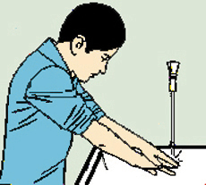
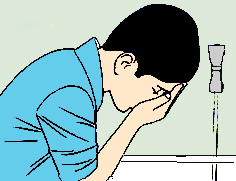
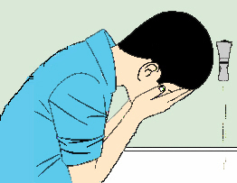
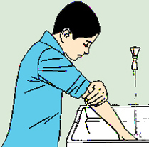
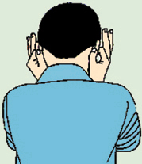
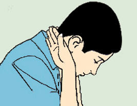
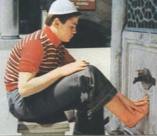

Abdest
Šta je to abdest?
Abdest je posebno vjersko pranje koje se uzima radi klanjanja namaza i učenja Kur'ana.
Kako se uzima abdest?
Abdest se uzima čistom vodom i s Bismillom.
Kakav je propis uzimanje abdesta?
Uzimanje abdesta može biti farz, vadžib ili mendub:
- pred spavanje,
- poslije sna,
- kad god se abdest pokvari,
- poslije nedolična i bestidna govora, i
- iza svakog griješnog djela te prekomjernog i glasnog smijanja.
Šta peremo pri uzimanju abdesta?
Pri uzimanju abdesta peremo:
Koji su abdestki farzovi (šartovi)?
Šta kvari abdest?
Kada je obavezno uzeti abdest (farz)?
Obavezno je uzeti abdest radi namaza i tavafa.
Neki učenjaci smatraju da nije dozvoljeno dodirivati Mushaf bez abdesta, a kao dokaz za to uzimaju riječi Uzvišenog:
"Dodirnuti ga smiju samo oni koji su čisti."
"Kur'an smije dotaknuti samo onaj ko je čist."
Kada je lijepo uzeti abdest (mustehab)?
Mustehab je uzeti abdest:
Abdest žene koja ima istihadu
Fatima bint Ebi Hubejsa došla je Vjerovjesniku, s.a.v.s., i rekla:
"Ja sam žena koja ima istihadu i nisam čista. Da li da obavljam namaz?" Rekao joj je: "Ne. To je pranje i nije hajd. Nemoj klanjati u periodu tvoga hajda, zatim se okupaj i abdesti za svaki namaz, a potom klanjaj, makar ti krv kapala na tvoju prostirku."
"Ona koja ima istihadu abdestit će se za svaki namaz."
Koliko namaza možemo klanjati s jednim abdestom?
S jednim abdestom možemo klanjati više namaza, ukoliko nam se ne desi nešto što kvari abdest.
Šta je to mesh?
Mesh je potiranje mokrom rukom po zavoju kada neki dio tijela zbog bolesti ili povrede ne možemo oprati.
"O vjernici, kada hoćete da namaz obavite, lica svoja i ruke svoje do iza lakta operite - a dio glava svojih potarite - i noge svoje do iza članaka."
"Nikom od vas neće biti primljen namaz sve dok se ne abdesti."
Nabroj abdestke sunnete?
"Niko od vas ko u potpunosti obavi abdest, a potom prouči: Nema drugog boga osim Allaha i da je Muhammed Allahov rob i Njegov poslanik, a da mu se neće otvoriti osmera džennetska vrata, gdje će ući (u Džennet) s kojih god vrata želi."
Zapamti
Pred samo uzimanje abdesta donesemo odluku da ćemo se, u ime Allaha a radi obavljanja namaza, abdestiti i proučiti Bismillu.







- da ne ostane suho između prstiju,
- da se noge operu do iznad članaka, i
- da ne ostanu suhe pete.